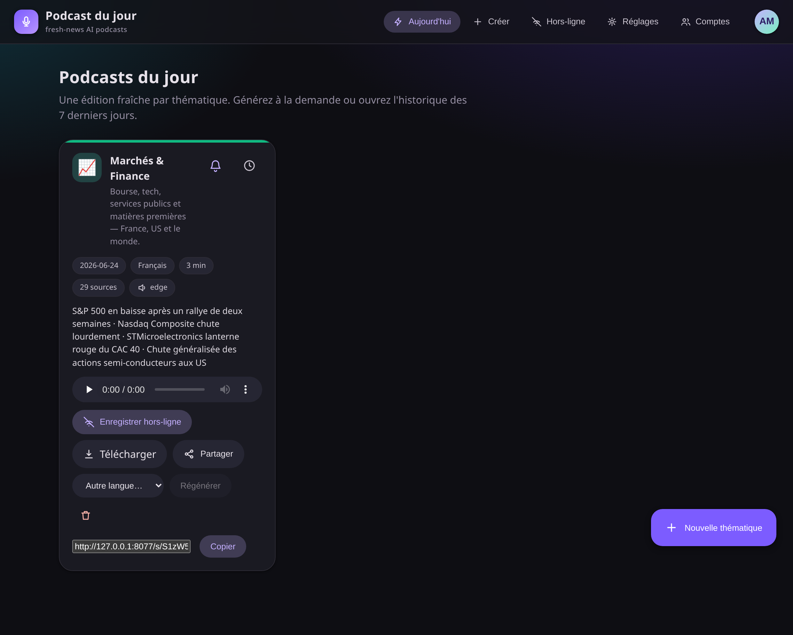
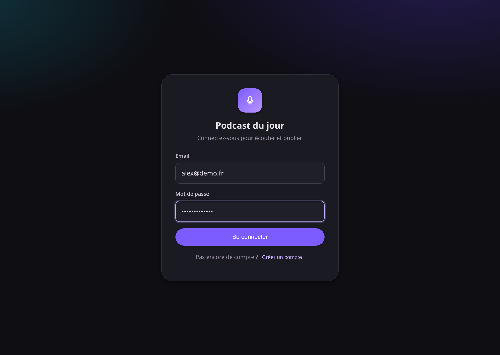
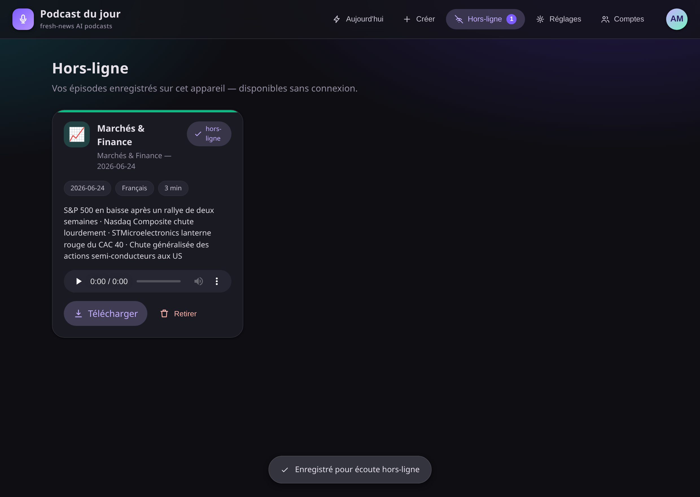
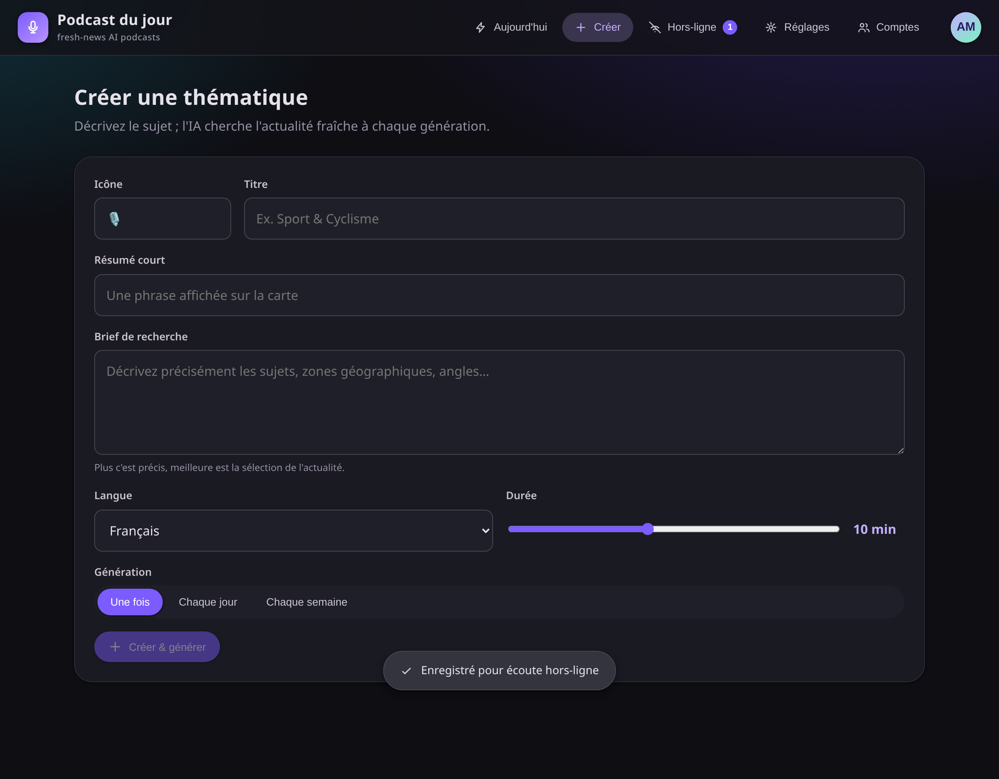
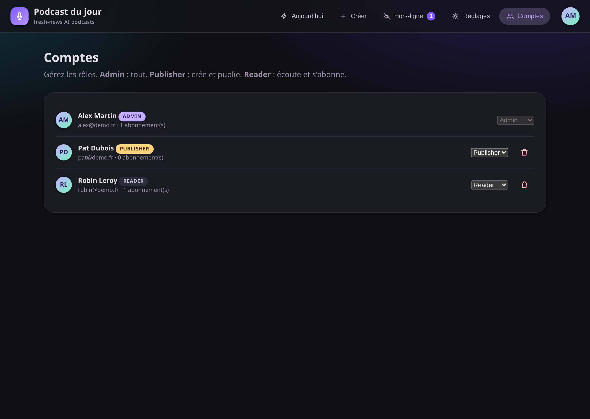
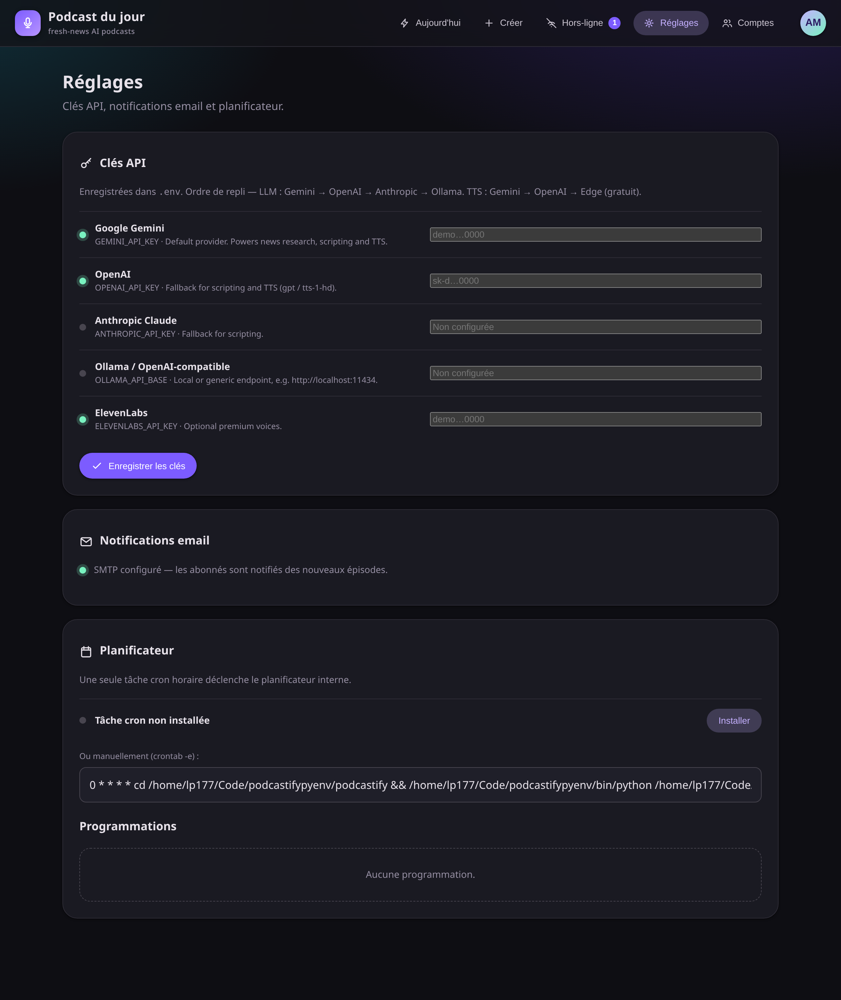

One Material-design platform that researches today's news per theme, writes a two-host script with an LLM, voices it, and serves it to your listeners — with accounts, roles, email subscriptions and full offline playback.

Not a demo — a self-hostable product with the pieces a real listener-facing app needs.
Gemini with Google-Search grounding pulls the last 48 h, with RSS and plain-LLM fallbacks. A memory file skips stories already covered.
LLM: Gemini → OpenAI → Anthropic → Ollama. TTS: Gemini → OpenAI → Edge (free, always available). Bring any one key.
Tonal surfaces, paper elevation and real touch ripples on every control. Built as a no-build Vue + custom Material components.
Cookie-session auth with three roles — admin, publisher, reader. Publishing is gated; the first account becomes the admin.
Installable PWA. Tap “Save offline” and a service worker caches the audio — your saved episodes play with no connection.
Readers subscribe to subjects and get an email with a private listen link whenever a new episode drops.
Schedule themes daily or weekly. A single hourly cron entry — or the bundled scheduler container — fires what’s due.
French, English, Spanish, German, Italian — with native voices per provider, and one-click regeneration into another language.
Mint an unguessable /s/<key> link — listen with no login, like a password. Perfect for sharing one episode.
The real app — captured straight from the running server.





Everything — manage users & roles, API keys, the SMTP setup and the scheduler. The first registered account.
Create themes, generate episodes on demand and schedule them. Cannot touch users or system settings.
The default. Listen, save episodes offline, subscribe to subjects and get notified by email. No publishing.
Ship it in a container, or run it straight from Python. You only need one LLM key to start — audio works for free via Edge TTS.
# 1 — configure your keys cp .env.example .env # add at least GEMINI_API_KEY in .env # 2 — build & run docker compose up -d # or: podman-compose up -d # 3 — open the app http://127.0.0.1:8077
scheduler service fires due schedules hourly — no host cron needed.python -m venv .venv && source .venv/bin/activate pip install -r requirements.txt cp .env.example .env # add a key python server.py # http://127.0.0.1:8077 # generate from the CLI too: python generate.py markets-finance --lang en --minutes 12
Grounded web search gathers the last 48 h for the theme, skipping anything already covered.
An LLM writes a tight anchor + analyst briefing at your target length and language.
The script is voiced with native per-language voices and saved as an MP3.
It lands in the catalog, retention prunes old episodes, and subscribers get an email.